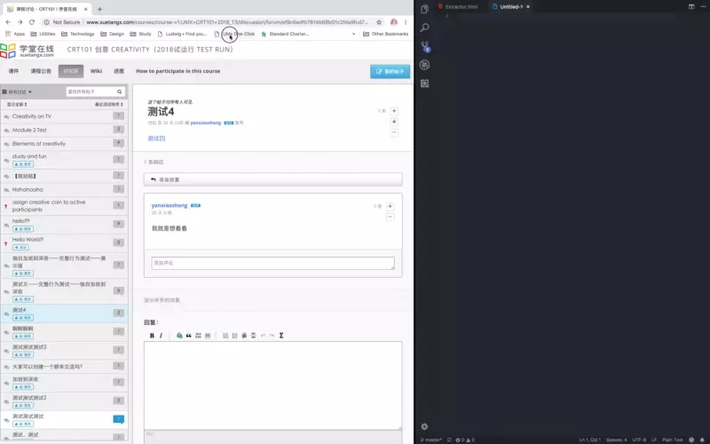

| XuetangX Discussion ID & Thread ID Extractor |
UMx One-Click is a Bookmarklet extracting and copying "User ID", "Discussion ID" and “Thread ID" to the clipboard from XuetangX forum pages.
To use this script, click "COPY TO CLIPBOARD" first, press Ctrl / Command + D and paste the script in bookmark editor of your browser. Don't forget rename the bookmark as "UMx One-Click" or any other you like.
Notes:
1. A latest version of Google Chrome is needed for this script.
2. I developed and tested this script with / on Google Chrome, everything goes smoothly.
3. Apple Safari and mobile devices are NOT supported.
